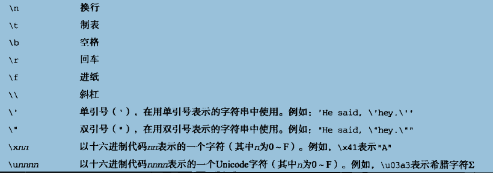
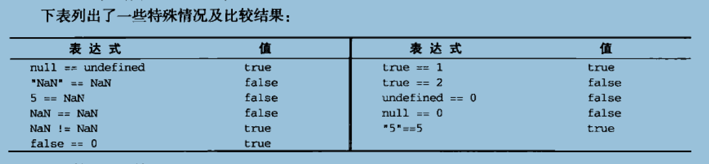
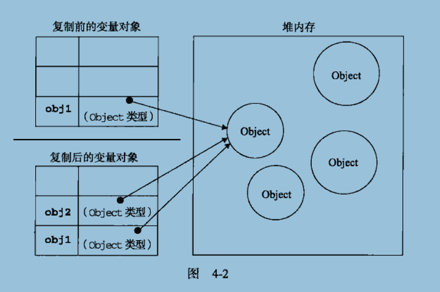
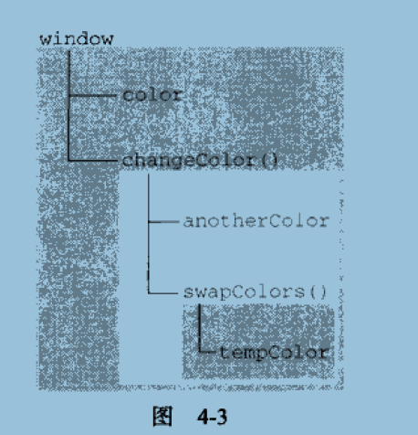
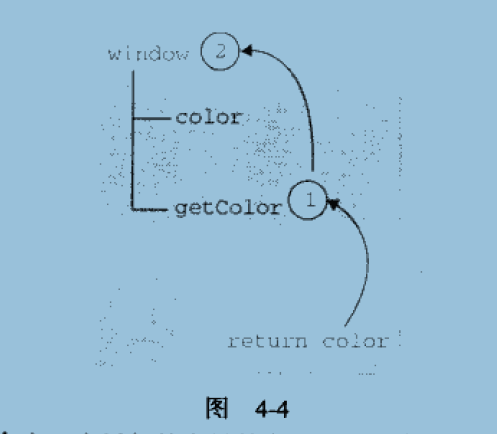

dw




 1. 转换函数：
js提供了parseInt()和parseFloat()两个转换函数。前者把值转换成整数，后者把值转换成浮点数。只有对String类型调用这些方法，这两个函数才能正确运行；对其他类型返回的都是NaN(Not a Number)。
一些示例如下：
parseInt("1234blue"); //returns 1234
parseInt("0xA"); //returns 10
parseInt("22.5"); //returns 22
parseInt("blue"); //returns NaN
parseInt()方法还有基模式，可以把二进制、八进制、十六进制或其他任何进制的字符串转换成整数。基是由parseInt()方法的第二个参数指定的，示例如下：
parseInt("AF", 16); //returns 175
parseInt("10", 2); //returns 2
parseInt("10", 8); //returns 8
parseInt("10", 10); //returns 10
如果十进制数包含前导0，那么最好采用基数10，这样才不会意外地得到八进制的值。例如：
parseInt("010"); //returns 8
parseInt("010", 8); //returns 8
parseInt("010", 10); //returns 10
parseFloat()方法与parseInt()方法的处理方式相似。
使用parseFloat()方法的另一不同之处在于，字符串必须以十进制形式表示浮点数，parseFloat()没有基模式。
下面是使用parseFloat()方法的示例：
parseFloat("1234blue"); //returns 1234.0
parseFloat("0xA"); //returns NaN
parseFloat("22.5"); //returns 22.5
parseFloat("22.34.5"); //returns 22.34
parseFloat("0908"); //returns 908
parseFloat("blue"); //returns NaN
2. 强制类型转换
还可使用强制类型转换（type casting）处理转换值的类型。使用强制类型转换可以访问特定的值，即使它是另一种类型的。
ECMAScript中可用的3种强制类型转换如下：
Boolean(value)??把给定的值转换成Boolean型；
Number(value)??把给定的值转换成数字（可以是整数或浮点数）；
String(value)??把给定的值转换成字符串。
用这三个函数之一转换值，将创建一个新值，存放由原始值直接转换成的值。这会造成意想不到的后果。
当要转换的值是至少有一个字符的字符串、非0数字或对象（下一节将讨论这一点）时，Boolean()函数将返回true。如果该值是空字符串、数字0、undefined或null，它将返回false。
可以用下面的代码段测试Boolean型的强制类型转换。
Boolean(""); //false ? empty string
Boolean("hi"); //true ? non-empty string
Boolean(100); //true ? non-zero number
Boolean(null); //false - null
Boolean(0); //false - zero
Boolean(new Object()); //true ? object
Number()的强制类型转换与parseInt()和parseFloat()方法的处理方式相似，只是它转换的是整个值，而不是部分值。示例如下：
用 法 结 果
Number(false) 0
Number(true) 1
Number(undefined) NaN
Number(null) 0
Number( "5.5 ") 5.5
Number( "56 ") 56
Number( "5.6.7 ") NaN
Number(new Object()) NaN
Number(100) 100
最后一种强制类型转换方法String()是最简单的，示例如下：
var s1 = String(null); //"null"
var oNull = null;
var s2 = oNull.toString(); //won’t work, causes an error
3. 利用js变量弱类型转换
举个小例子，一看，就会明白了。
name="viewport" content="width=device-width; initial-scale=1.0; maximum-scale=1; user-scalable=no;
属性名 取值 描述
width 正整数 或 device-width 定义视口的宽度，单位为像素
height 正整数 或 device-height 定义视口的高度，单位为像素，一般不用
initial-scale [0.0-10.0] 定义初始缩放值
minimum-scale [0.0-10.0] 定义缩小最小比例，它必须小于或等于maximum-scale设置
maximum-scale [0.0-10.0] 定义放大最大比例，它必须大于或等于minimum-scale设置
user-scalable yes/no 定义是否允许用户手动缩放页面，默认值yes
1. 转换函数：
js提供了parseInt()和parseFloat()两个转换函数。前者把值转换成整数，后者把值转换成浮点数。只有对String类型调用这些方法，这两个函数才能正确运行；对其他类型返回的都是NaN(Not a Number)。
一些示例如下：
parseInt("1234blue"); //returns 1234
parseInt("0xA"); //returns 10
parseInt("22.5"); //returns 22
parseInt("blue"); //returns NaN
parseInt()方法还有基模式，可以把二进制、八进制、十六进制或其他任何进制的字符串转换成整数。基是由parseInt()方法的第二个参数指定的，示例如下：
parseInt("AF", 16); //returns 175
parseInt("10", 2); //returns 2
parseInt("10", 8); //returns 8
parseInt("10", 10); //returns 10
如果十进制数包含前导0，那么最好采用基数10，这样才不会意外地得到八进制的值。例如：
parseInt("010"); //returns 8
parseInt("010", 8); //returns 8
parseInt("010", 10); //returns 10
parseFloat()方法与parseInt()方法的处理方式相似。
使用parseFloat()方法的另一不同之处在于，字符串必须以十进制形式表示浮点数，parseFloat()没有基模式。
下面是使用parseFloat()方法的示例：
parseFloat("1234blue"); //returns 1234.0
parseFloat("0xA"); //returns NaN
parseFloat("22.5"); //returns 22.5
parseFloat("22.34.5"); //returns 22.34
parseFloat("0908"); //returns 908
parseFloat("blue"); //returns NaN
2. 强制类型转换
还可使用强制类型转换（type casting）处理转换值的类型。使用强制类型转换可以访问特定的值，即使它是另一种类型的。
ECMAScript中可用的3种强制类型转换如下：
Boolean(value)??把给定的值转换成Boolean型；
Number(value)??把给定的值转换成数字（可以是整数或浮点数）；
String(value)??把给定的值转换成字符串。
用这三个函数之一转换值，将创建一个新值，存放由原始值直接转换成的值。这会造成意想不到的后果。
当要转换的值是至少有一个字符的字符串、非0数字或对象（下一节将讨论这一点）时，Boolean()函数将返回true。如果该值是空字符串、数字0、undefined或null，它将返回false。
可以用下面的代码段测试Boolean型的强制类型转换。
Boolean(""); //false ? empty string
Boolean("hi"); //true ? non-empty string
Boolean(100); //true ? non-zero number
Boolean(null); //false - null
Boolean(0); //false - zero
Boolean(new Object()); //true ? object
Number()的强制类型转换与parseInt()和parseFloat()方法的处理方式相似，只是它转换的是整个值，而不是部分值。示例如下：
用 法 结 果
Number(false) 0
Number(true) 1
Number(undefined) NaN
Number(null) 0
Number( "5.5 ") 5.5
Number( "56 ") 56
Number( "5.6.7 ") NaN
Number(new Object()) NaN
Number(100) 100
最后一种强制类型转换方法String()是最简单的，示例如下：
var s1 = String(null); //"null"
var oNull = null;
var s2 = oNull.toString(); //won’t work, causes an error
3. 利用js变量弱类型转换
举个小例子，一看，就会明白了。
name="viewport" content="width=device-width; initial-scale=1.0; maximum-scale=1; user-scalable=no;
属性名 取值 描述
width 正整数 或 device-width 定义视口的宽度，单位为像素
height 正整数 或 device-height 定义视口的高度，单位为像素，一般不用
initial-scale [0.0-10.0] 定义初始缩放值
minimum-scale [0.0-10.0] 定义缩小最小比例，它必须小于或等于maximum-scale设置
maximum-scale [0.0-10.0] 定义放大最大比例，它必须大于或等于minimum-scale设置
user-scalable yes/no 定义是否允许用户手动缩放页面，默认值yes
英文强制换行wwwwwwwwwwwwwwwwwwwwwwwwwwwwwwwwwwwwww可以设置对象的CSS属性：word-wrap：break-word，或者设置 word-break：break-all；
当浏览器第一次加载资源的时候，返回一般为200，意思是成功获取资源，并会在浏览器的缓存中记录下max-age，第二次访问的时候：
如果只是用浏览器打开，那么浏览器会去判断这个资源在缓存里有没有，如果有的话，会去判断max-age，看看过期没有，如果没有过期，则直接读缓存，根本不会和服务器进行交互，换句话说，断网都能打开，就和本地跑一样！如果已经过期了，那就去服务器请求，等待服务器响应，这是很费时间的，服务器如果发现资源没有改变过，那么就会返回304，告诉浏览器，我没变过，你去读缓存吧，于是浏览器也不用从服务器拉数据了，然而，等待服务器响应也是一个很要命的问题，在网速发达的今天，等一个响应，有时比下载还慢。
如果是用浏览器刷新的，那么浏览器不会去判断max-age了，直接去服务器拿，如果服务器判断资源没变过，则还是会返回304，和上面是一样的，所以刷新一下，其实很可怕，等于把所有的资源都要去服务器请求一边，问问服务器我过期了没有。
综上，尽量减少网页的资源数量！尽量合并JS CSS 图片！响应速度将会猛增！
当今，响应速度比网速重要！！
11111
如果与a,form对象，image对象，applet对象相对应的html标记中设定了name属性，那么它的值将被用作document对象的属性名，用来引用相应的对象，其他的对象则不可以。另外,input等如果作为form的子元素，则直接用inputName或者document.inputName来引用此对象就是错误的，必须使用formName.inputName引用,否则要用inputName来引用。还应该注意到很多时候我们都没有为元素设置name.
如果想引用一个有id的元素,只能用Id或者document.getElementByIdx_x,document.all.id来引用
但是象这样的元素,所以象a href="......" name="linkname" id="linkid"......a这样的，可以用下面的：
linkid.href;
linkname.href;
document.all.linkid.href;
document.all.linkname.href;
document.getElementByIdx_x("linkid").href;
document.getElementsByName("linkname")[0].href来引用
©(商标版权号)
设为首页
加入收藏